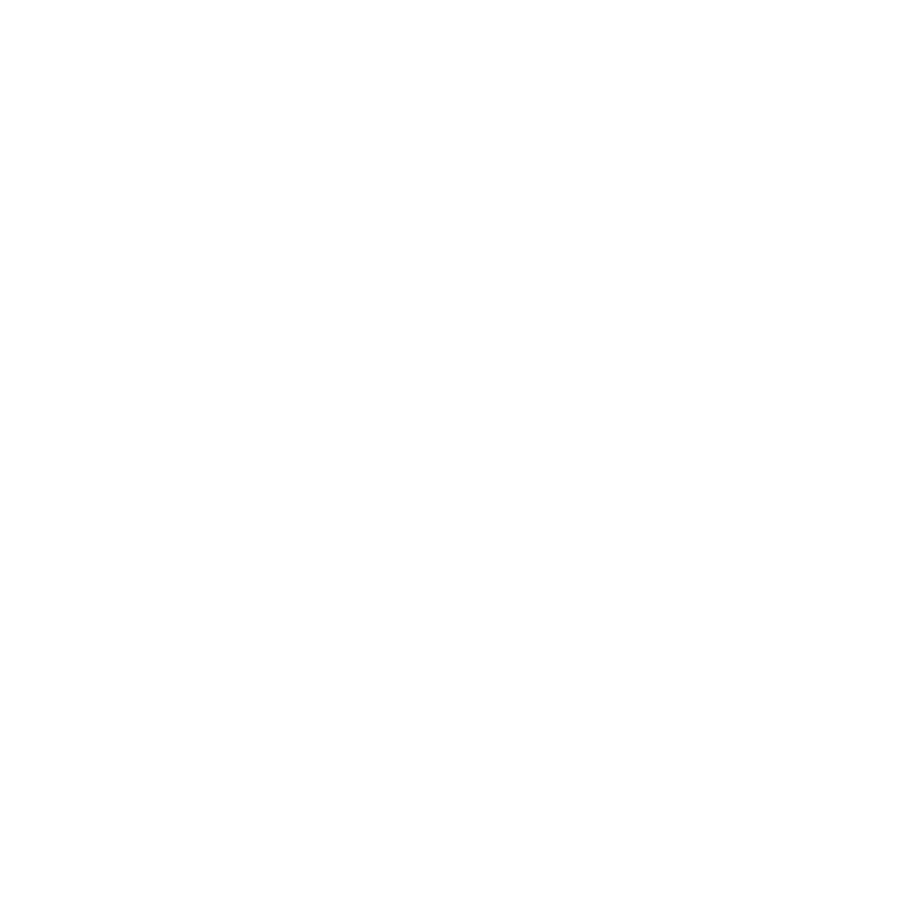

A terminal IDE agent that works with any local LLM.
Persistent memory · Mission tracking · Web search · Precision editing
No data leaves your machine. Works with llama.cpp, Ollama, vLLM — any OpenAI-compatible backend.
Keyword-searchable JSONL-backed memory that survives across sessions. The agent remembers your projects, preferences, and context.
Set objectives that persist across sessions. Agent tracks progress, maintains focus, and updates its own context layer via out_of_the_box.py.
Generates multi-query searches via the LLM, aggregates and deduplicates results. SearXNG primary with Mojeek fallback.
Surgical line-level tools — insert_lines, patch_file, replace_lines. No full-file rewrites. Resume truncated writes seamlessly.
Built-in syntax checking for Python (AST), JavaScript, HTML, and JSON. Catches errors immediately after every write.
The LLM autonomously enriches its own context layer. Every conversation makes it smarter about your workflow over time.
Every session auto-saves. Browse, search, and resume past conversations with full context preserved. 50-session auto-cleanup.
Run SWE-bench, BigCodeBench, GAIA, and LiveCodeBench through the agent's own ReAct loop — no separate tooling needed.
Four principles that guide every design decision.
Your files, code, and memory are primary. Web search is a fallback, not a dependency. Everything runs on your hardware.
Line-level tools — insert, delete, replace, patch — instead of rewriting entire files. Context is scarce; use it wisely.
Read files in 20-50 line chunks. Never bloat context. Smart truncation keeps the conversation focused and efficient.
The LLM feeds insights back into out_of_the_box, enriching its own context across sessions. Every conversation makes it better.

Every interaction is a keystroke away.
pip, source, or Docker — pick what works for you.
Open-Agent vs proprietary cloud CLI agents.
| open-agent | Claude Code | Gemini CLI | |
|---|---|---|---|
| Any local LLM | ✓ | ✗ | ✗ |
| Fully private | ✓ | ✗ | ✗ |
| Self-improving context | ✓ | ✗ | ✗ |
| Persistent mission tracking | ✓ | ✗ | ✗ |
| Session history + search | ✓ | ✓ | ✗ |
| Built-in code validation | ✓ | ✗ | ✗ |
| Loop/tool repetition guard | ✓ | ✗ | ✗ |
| Built-in benchmarks | ✓ | ✗ | ✗ |
| Precision line editing | ✓ | ✓ | ✓ |
| Cost | Free | Per-token | Per-token |